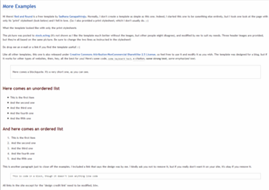

More Examples
Hi there! Red and Round is a free template by Sadhana Ganapathiraju. Normally, I don't create a template as simple as this one. Indeed, I started this one to be something else entirely, but I took one look at the page with only its "print" stylesheet (look below) and I fell in love. (So: I also provided a print stylesheet, which I don't usually do. ;-)

The header pic was posted to stock.xchng and modified to suit my needs. So -- hey, wait, what header image?! You don't actually see it in the template as I liked the template much better without it. But I provided the pictures in the download files, because other people might like it the other way. ;-) There are three header images, though all of them are based on the same base image. Be sure to change the two lines as instructed in the stylesheet!
Do drop me an e-mail or a link if you find the template useful! :-)
Like all other templates, this one is also released under Creative Commons Attribution-NonCommercial-ShareAlike 2.5 License, so feel free to use it and modify it as you wish.
The template was designed for a blog, but if it works for other types of websites, then, hey, all the best for you! Here's some code, some keyboard text, a citation, some strong text, some emphasized text.
Here comes a blockquote. It's a very short one, as you can see.
Here comes an unordered list
- This is the first item
- And the second one
- And the third one
- And the fourth one
- And the fifth one
And here comes an ordered list
- This is the first item
- And the second one
- And the third one
- And the fourth one
- And the fifth one
This is another paragraph just to close off the examples. I included a link that says the design was by me. I kindly ask you not to remove it, but if you really don't want it on your site, it's okay if you remove it.
This is code in a block, though it doesn't look anything like codeAll links in the site except for the "design credit link" need to be modified, btw.